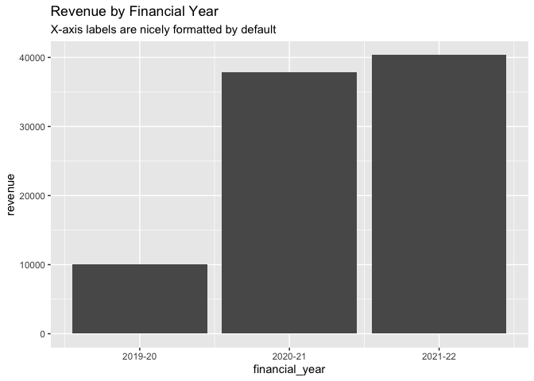

{acadyr} provides utility functions for creating and working with financial and academic years in R:
library(acadyr)
library(dplyr, warn.conflicts = FALSE)
library(ggplot2)
revenue <- tibble(
date = seq.Date(as.Date("2020-01-01"), as.Date("2022-01-01"), by = "3 months"),
financial_year = financial_year(date),
academic_year = academic_year(date),
revenue = rnorm(9, 10000, 1000)
)
revenue
#> # A tibble: 9 × 4
#> date financial_year academic_year revenue
#> <date> <fy> <ay> <dbl>
#> 1 2020-01-01 2019-20 2019/20 10066.
#> 2 2020-04-01 2020-21 2019/20 9188.
#> 3 2020-07-01 2020-21 2019/20 9902.
#> 4 2020-10-01 2020-21 2020/21 9512.
#> 5 2021-01-01 2020-21 2020/21 9276.
#> 6 2021-04-01 2021-22 2020/21 10309.
#> 7 2021-07-01 2021-22 2020/21 10409.
#> 8 2021-10-01 2021-22 2021/22 9987.
#> 9 2022-01-01 2021-22 2021/22 9639.These data types also play nicely with {ggplot2}:
revenue |>
ggplot(aes(financial_year, revenue)) +
geom_bar(stat = "summary", fun = "sum") +
labs(
title = "Revenue by Financial Year",
subtitle = "X-axis labels are nicely formatted by default"
)
Installation
acadyr is not yet on CRAN but you can install it from GitHub using {pak}:
# install.packages("pak")
pak::pak("wurli/acadyr")Motivation?
Non-calendar year types can cause headaches in everyday analysis for several reasons:
They (usually) don’t begin on January 1st, meaning they don’t integrate easily with other date classes
Formatting for display is a pain
Different use cases may require financial/academic years to roll over on different times. For example, the UK financial year begins on April 1st, but the Australian financial year begins on July 1st